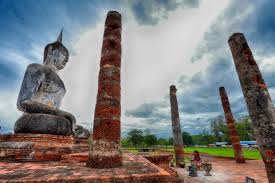

กำเนิดเมืองสุโขทัย
หลักฐานทางโบราณคดีต่าง ๆ ได้แสดงให้เห็นว่าได้มีชุมชนในบริเวณเมืองสุโขทัยมาก่อนแล้ว และมีพัฒนาการจากชุมชนเล็ก ๆ กลายเป็นชุมชนใหญ่ จนพัฒนาเป็นบ้านเมือง
จากหลักฐานทางโบราณคดีทำให้ทราบว่าชุมชนนี้มีการสร้างบ้านเรือนด้วยไม้ มีการล่าสัตว์
หาของป่า เลี้ยงสัตว์ประเภทวัวควาย มีการทำภาชนะดินเผาขึ้นใช้เอง รู้จักการหลอมโลหะ มีความสัมพันธ์ติดต่อค้าขายกับชุมชนที่อยู่ใกล้เคียงและที่อยู่ห่างไกล
ในราวกลางพุทธศตวรรษที่ 18 วัฒนธรรมเขมรได้เข้ามามีอิทธิพลอย่างเด่นชัด ดังหลักฐานทางด้านสถาปัตยกรรมและประติมากรรม เช่น ศาลตาผาแดง ก่อด้วยสิลาแลงซึ่งส่วนยอดได้พังทลายลงแล้ว ประติมากรรมหินทรายทั้งที่เป็นเทวรูปและเทวนารีรวมหกรูป เทียบรูปแบบได้กับศิลปะเขมรแบบบายน ตรงกับรัชกาลพระเจ้าชัยวรมันที่ 7 ของเขมร อีกแห่งหนึ่งคือ ปรางค์ 3 องค์ ก่อด้วยศิลาแลงที่วัดพระ-พายหลวง เรียงในแนวเหนือใต้ สร้างขึ้นตามคติมหายาน
ประมาณช่วงครึ่งหลังของพุทธศตวรรษที่ 18 หลักฐานที่ปรากฏในศิลาจารึกหลักที่ 2 (ศิลาจาจึกวัดศรีชุม) ได้กล่าวว่าพ่อขุนศรีนาวนำถมเป็นกษัตริย์เสวยราชย์ในกรุงสุโขทัยและศรีสัชนาลัย ซึ่งพระองค์คงจะมีความสัมพันธ์ใกล้ชิดกับราชสำนักเขมรกล่าวคือพ่อขุนผาเมืองผู้เป็นโอรสและครองเมืองราดได้พระราชธิดาของกษัตริย์เขมรเป็นมเหสี พร้อมได้รับราชทินนาม กมรเตงอัญศรีอินทรบดินทราทิตย์ และพระขรรค์ชัยศรีจากกษัตริย์เขมรด้วย
อิทธิพลของวัฒนธรรมเขมรในสุโขทัยเสื่อมถอยลงภายหลังสิ้นรัชกาลพระเจ้าชัยวรมันที่ 7
ในราว พ.ศ. 1760 ซึ่งในช่วงระยะเวลาดังกล่าวนั้นมีผู้นำชาวไทยคือพ่อขุนผาเมืองกับพ่อขุนบางกลางหาวได้ร่วมกันกำจัดอำนาจและขับไล่ขอมสบาดโขลญลำโพงออกไปจากเมืองสุโขทัยได้สำเร็จในราว พ.ศ. 1782 จากนั้นพ่อขุนผาเมืองได้ถวายพระนามกมรเตงอัญศรีอินทรบดินทราทิตย์และพระขรรค์ชัยศรี อันเป็นสัญลักษณ์แห่งกษัตริย์ให้แก่พ่อขุนบางกลางหาว มีอำนาจในเมืองสุโขทัยแทนราชวงศ์พ่อขุนศรีนาวนำถม
ความเจริญรุ่งเรือง
ด้านเศรษฐกิจ
สภาพเศรษฐกิจสมัยสุโขทัยเป็นระบบเศรษฐกิจแบบเสรีนิยม ดังข้อความปรากฏในหลักศิลาจารึกหลักที่ 1 "…ใครจักใคร่ค้าช้างค้า ใครจักใคร่ค้าม้าค้า ใครจักใคร่ค้าเงินค้าทองค้า…" และ "...เมืองสุโขทัยนี้ดี ในน้ำมีปลาในนามีข้าว..." ประชาชนประกอบอาชีพเกษตรกรรมด้วยระบบการเกษตรแบบพึ่งพาธรรมชาติ เช่นสังคมไทยส่วนใหญ่ในชนบทปัจจุบัน
ด้านสังคม ความเชื่อ และศาสนา
การใช้ชีวิตของผู้คนในสมัยสุโขทัยมีความอิสรเสรี มีเสรีภาพอย่างมากเนื่องจากผู้ปกครองรัฐให้อิสระแก่ไพร่ฟ้า และปกครองผู้ใต้ปกครองแบบพ่อกับลูก ดังปรากฏหลักฐานในศิลาจารึกว่า "…ด้วยเสียงพาทย์ เสียงพิณ เสียงเลื่อน เสียงขับ ใครจักมักเล่น เล่น ใครจักมักหัว หัว ใครจักมักเลื่อน เลื่อน…"
ด้านความเชื่อและศาสนา สังคมยุคสุโขทัยประชาชนมีความเชื่อทั้งเรื่องวิญญาณนิยม (Animism) ไสยศาสตร์ ศาสนาพราหมณ์ฮินดู และพุทธศาสนา ดังปรากฏหลักฐานในศิลาจารึกหลักที่ 1 ด้านที่ 3 ว่า "…เบื้องหัวนอนเมืองสุโขทัยนี้มีกุฎิวิหารปู่ครูอยู่ มีสรีดพงส์ มีป่าพร้าว ป่าลาง ป่าม่วง ป่าขาม มีน้ำโคก มีพระขระพุงผี เทพยาดาในเขาอันนั้นเป็นใหญ่กว่าทุกผีในเมืองนี้ ขุนผู้ใดถือเมืองสุโขทัยนี้แล้ว ไหว้ดีพลีถูก เมืองนี้เที่ยว เมืองนี้ดี ผิไหว้บ่ดี พลีบ่ถูก ผีในเขาอันนั้นบ่คุ้มบ่เกรง เมืองนี้หาย…"
ส่วนด้านศาสนา ได้รับอิทธิพลจากพุทธศาสนานิกายเถรวาทแบบลังกาวงศ์จากนครศรีธรรมราช ในวันพระ จะมีภิกษุเทศนาสั่งสอน ณ ลานธรรมในสวนตาล โดยใช้พระแท่นมนังคศิลาอาสน์ เป็นอาสนะสงฆ์ ในการบรรยายธรรมให้ประชาชนฟัง ยังผลให้ประชาชนในยุคนี้นิยมปฏิบัติตนอยู่ในศีลธรรม มีการถือศีล โอยทานกันเป็นปกติวิสัย ทำให้สังคมโดยรวมมีความสงบสุขร่มเย็น
ด้านการปกครอง
ด้านการปกครองสามารถแยกกล่าวเป็น 2 แนว ดังนี้
ในแนวราบ
จัดการปกครองแบบพ่อปกครองลูก กล่าวคือผู้ปกครองจะมีความใกล้ชิดกับประชาชน ให้ความเป็นกันเองและความยุติธรรมกับประชาชนเป็นอย่างมาก เมื่อประชาชนเกิดความเดือดร้อนไม่ได้รับความเป็นธรรม สามารถร้องเรียนกับพ่อขุนโดยตรงได้ โดยไปสั่นกระดิ่งที่แขวนไว้ที่หน้าประตูที่ประทับ ดังข้อความในศิลาจารึกปรากฏว่า "…ในปากประตูมีกระดิ่งอันหนึ่งไว้ให้ ไพร่ฟ้าหน้าใส…" นั่นคือเปิดโอกาสให้ประชาชนสามารถมาสั่นกระดิ่งเพื่อแจ้งข้อร้องเรียนได้
ในแนวดิ่ง
ได้มีการจัดระบบการปกครองขึ้นเป็น 4 ชนชั้น คือ
- พ่อขุน เป็นชนชั้นผู้ปกครอง อาจเรียกชื่ออย่างอื่น เช่น เจ้าเมือง พระมหาธรรมราชา หากมีโอรสก็ จะเรียก "ลูกเจ้า"
- ลูกขุน เป็นข้าราชบริพาร ข้าราชการที่มีตำแหน่งหน้าที่ช่วงปกครองเมืองหลวง หัวเมืองใหญ่น้อย และภายในราชสำนัก เป็นกลุ่มคนที่ใกล้ชิดและได้รับการไว้วางใจจากเจ้าเมืองให้ปฏิบัติหน้าที่บำบัด ทุกข์บำรุงสุขแก่ไพร่ฟ้า
- ไพร่หรือสามัญชน ได้แก่ราษฎรทั่วไปที่อยู่ในราชอาณาจักร (ไพร่ฟ้า)
- ทาส ได้แก่ชนชั้นที่ไม่มีอิสระในการดำรงชีวิตอย่างสามัญชนหรือไพร่ (อย่างไรก็ตามประเด็นทาส นี้ยังคงถกเถียงกันอยู่ว่ามีหรือไม่)
ความสัมพันธ์กับต่างชาติ
จักรวรรดิมองโกล
กองทัพจักรวรรดิมองโกลแผ่แสนยานุภาพโดดเด่นที่สุดเป็นช่วงเดียวกับการตั้งกรุงสุโขทัย ในปี พ.ศ. 1800 (ค.ศ. 1257) ซึ่งเป็นอาณาจักรของตนอย่างแท้จริงเป็นครั้งแรก
หลักฐานสำคัญในพงศาวดารหงวนฉบับเก่า เล่มที่ 2 แปลเรื่องราวการติดต่อระหว่างอาณาจักรสุโขทัยกับราชวงศ์มองโกลได้สรุปไว้ว่ากุบไลข่านทรงปรึกษาขุนนางข้าราชการระดับสูงเกี่ยวกับการเตรียมทัพไปปราบปรามแคว้นต่างๆ ทางใต้ มีสุโขทัย ละโว้ สุมาตรา และอื่นๆ เป็นเมืองขึ้น ปรากฏว่าขุนนางชื่อ เจี่ย หลู่ น่าต๋าไม่เห็นด้วยและได้กราบบังคมทูลเสนอแนะให้ทรงชักชวนให้ผู้นำดินแดนต่างๆ อ่อนน้อมยอมสนับสนุนก่อน หากไม่ยอมจึงยกกองทัพไปโจมตี นี่คือเหตุผลประการหนึ่งที่กุบไลข่านทรงส่งคณะทูตไปเจริญสัมพันธไมตรี และขอให้ส่งเครื่องราชบรรณาการไปยังราชสำนักมองโกล เพื่อแสดงความจงรักภักดีต่ออาณาจักรมองโกล ปรากฏว่ามีอาณาจักรในดินแดนต่างๆ กว่า 20 อาณาจักรยอมรับข้อเสนอ รวมทั้งอาณาจักรสุโขทัยด้วย (ช่วงระหว่างประมาณ พ.ศ. 1822 - 1825)
พงศาวดารหงวนฉบับเก่า เล่มที่ 12 เป็นหลักฐานสำคัญที่กล่าวถึงคณะทูตชุดแรกจากอาณาจักรมองโกลในสมัยกุบไลข่าน เดินทางมายังอาณาจักรสุโขทัยในเดือนพฤศจิกายนปี พ.ศ. 1825 (ค.ศ. 1282) ทูตคณะนี้นำโดยเหอจี จี่ นายทหารระดับสูงเป็นหัวหน้าคณะ แต่ขณะนังเรือแล่นผ่านฝั่งทะเลอาณาจักรจามปา ได้ถูกจับกุมและถูกประหารชีวิต ผลจากคณะทูตนี้ถูกประหารชีวิตก่อนจะเดินทางไปยังอาณาจักรสุโขทัยทำให้อาณาจักรสุโขทัยไม่ทราบว่ามองโกลพยายามส่งทูตมาติดต่อ
พงศาวดารหงวนฉบับเก่า เล่มที่ 17 กล่าวถึงคณะทูตมองโกลชุดที่สองเดินทางมายังอาณาจักรสุโขทัยในปี พ.ศ. 1835 (ค.ศ. 1292) ภายหลังจากข้าหลวงใหญ่ฝ่ายรักษาความสงบเรียบร้อยของมณฑลกวางตุ้ง ได้ส่งคนอัญเชิญพระราชสาส์นอักษรทองคำของกษัตริย์แห่งอาณาจักรสุโขทัยไปยังนครหลวงข่านมาลิก (ต้าตู หรือปักกิ่งปัจจุบัน) คณะทูตมองโกลชุดที่สองได้อัญเชิญพระบรมราชโองการของกุบไลข่านให้พ่อขุนรามคำแหงเสร็จไปเฝ้า พระบรมราชโองการนี้แสดงให้เห็นนโยบายของอาณาจักรมองโกลเรียกร้องให้ผู้นำของอาณาจักรต่างๆ ไปเฝ้ากุบไลข่าน แต่มิได้บังคับให้เป็นไปตามนี้ ซึ่งจะเห็นได้ว่าพ่อขุนรามคำแหงก็มิได้ปฏิบัติตามแต่ประการใด
พงศาวดารหงวนฉบับเก่า เล่มที่ 18 กุบไลข่านได้ส่งคณะทูตชุดที่สามมาสุโขทัย โดยได้อัญเชิญพระบรมราชโองการให้พ่อขุนรามคำแหงเสด็จไปเฝ้า หากมีเหตุขัดข้องให้ส่งโอรสหรือพระอนุชาและอำมาตย์ผู้ใหญ่เป็นตัวประกัน ซึ่งปรากฏว่าพ่อขุนรามคำแหงก็มิได้ปฏิบัติตาม แต่ส่งคณะทูตนำเครื่องราชบรรณาการไปแทน
อาณาจักรล้านนา
ในปี พ.ศ. 1839 พญามังราย(พ.ศ. 1804 - 1854) ได้มีคำสั่งให้สร้างเมืองใหม่ขึ้นมาโดยใช้ชื่อว่า นภบุรีศรีนครพิงค์เชียงใหม่ (เชียงใหม่) เพื่อที่จะเป็นเมืองหลวงแห่งใหม่ของอาณาจักรล้านนา ครั้งนั้นพ่อขุนรามคำแหงมหาราชและพญางำเมือง ได้เสด็จมาช่วยด้วย
อาณาจักรอยุธยา
หลังจากมีการก่อตั้งกรุงศรีอยุธยา แรกนั้นสุโขทัยและอยุธยาไม่ได้เป็นไมตรีต่อกัน แต่ด้วยชัยภูมิที่เหมาะสมกว่า ทำให้อยุธยาเจริญเติบโตอย่างรวดเร็ว ประกอบกับปัญหาการเมืองภายในของสุโขทัยมิได้เป็นไปโดยสงบ มีการแย่งชิงราชสมบัติกันระหว่าง พระยาบานเมือง พระยาราม ยังผลให้อยุธยาสบโอกาสเข้าแทรกแซงกิจการภายใน ในรัชกาลนี้มีการรับไมตรีจากอยุธยาโดยการสมรสระหว่างราชวงศ์พระร่วง กับราชวงศ์สุพรรณภูมิ โดยมีพระราเมศวร ซึ่งต่อมาคือสมเด็จพระบรมไตรโลกนาถเป็นราชบุตรจากสองราชวงศ์
จนสิ้นรัชกาลพระมหาธรรมราชาที่ 4 (บรมปาล) พระยายุทธิษฐิระซึ่งเดิมทีอยู่ศรีสัชนาลัย ได้เข้ามาครองเมืองสุโขทัย และเมื่อแรกที่สมเด็จพระบรมไตรโลกนาถ เสด็จขึ้นผ่านภิภพ เป็นพระมหากษัตริย์กรุงศรีอยุธยา ปรากฏว่าขณะนั้น พระยายุทธิษฐิระ เกิดความน้อยเนื้อต่ำใจ ที่ได้เพียงตำแหน่งพระยาสองแคว เนื่องด้วย สมเด็จพระบรมไตรโลกนาถทรงเคยดำริไว้สมัยทรงพระเยาว์ว่า หากได้ขึ้นเป็นพระมหากษัตริย์ จะชุบเลี้ยงพระยายุทธิษฐิระให้ได้เป็นพระร่วงเจ้าสุโขทัย พ.ศ. 2011 พระยายุทธิษฐิระจึงเอาใจออกห่างจากสมเด็จพระบรมไตรโลกนาถ ไปขึ้นกับ พระยาติโลกราช กษัตริย์ล้านนาในขณะนั้น เหตุการณ์นี้ส่งผลให้เกิดการเฉลิมพระนามกษัตริย์ล้านนา จากพระยา เป็น พระเจ้า เพื่อให้เสมอศักดิ์ด้วยกรุงศรีอยุธยา พระนามพระยาติโลกราช จึงได้รับการเฉลิมเป็นพระเจ้าติโลกราช
หลังจากที่พระยายุทธิษฐิระ นำสุโขทัยออกจากอยุธยาไปขึ้นกับล้านนา สมเด็จพระบรมไตรโลกนาถจึงทรงเสด็จจากกรุงศรีอยุธยา กลับมาพำนัก ณ เมืองสรลวงสองแคว พร้อมทั้งสร้างกำแพงและค่ายคู ประตู หอรบ แล้วจึงสถาปนาขึ้นเป็นเมือง พระพิษณุโลกสองแคว เป็นราชธานีฝ่ายเหนือของอาณาจักรแทนสุโขทัย ในเวลาเจ็ดปีให้หลัง สมเด็จพระบรมไตรโลกนาถจึงทรงตีเอาสุโขทัยคืนได้ แต่เหตุการณ์ทางเมืองเหนือยังไม่เข้าสู่ภาวะที่น่าไว้วางใจ จึงทรงตัดสินพระทัยพำนักยังนครพระพิษณุโลกสองแควต่อจนสิ้นรัชกาล ส่วนทางอยุธยานั้น ทรงได้สถาปนาสมเด็จพระบรมราชาธิราชที่ 3 พระราชโอรส เป็นพระมหาอุปราช ดูแลอยุธยาและหัวเมืองฝ่ายใต้
ด้วยความที่เป็นคนละประเทศมาก่อน และมีสงครามอยู่ด้วยกัน ชาวบ้านระหว่างสุโขทัยและอยุธยา จึงมิได้ปรองดองเป็นน้ำหนึ่งใจเดียวกัน จึงต้องแยกปกครอง โดยพระมหากษัตริย์อยุธยา จะทรงสถาปนาพระราชโอรส หรือพระอนุชา หรือพระญาติ อันมีเชื้อสายสุโขทัย ปกครองพิษณุโลกในฐานะราชธานีฝ่ายเหนือ และควบคุมหัวเมืองเหนือทั้งหมด
การสิ้นสุดยุคอาณาจักร
พ.ศ. 2127 หลังจากชนะศึกที่แม่น้ำสะโตงแล้ว พระนเรศวรโปรดให้เทครัวเมืองเหนือทั้งปวง (ตาก สุโขทัย ศรีสัชนาลัย พิษณุโลก กำแพงเพชร ชัยบุรี ศรีเทพ) ลงมาไว้ที่อยุธยา เพื่อเตรียมรับศึกใหญ่ พิษณุโลกและหัวเมืองเหนือทั้งหมดจึงกลายเป็นเมืองร้าง หลังจากเทครัวไปเมืองใต้ จึงสิ้นสุดการแบ่งแยกระหว่างชาวเมืองเหนือ กับชาวเมืองใต้ และถือเป็นการสิ้นสุดของรัฐสุโขทัยโดยสมบูรณ์ เพราะหลังจากนี้ 8 ปี พิษณุโลกได้ถูกฟื้นฟูอีกครั้ง แต่ถือเป็นเมืองเอกในราชอาณาจักร มิใช่ราชธานีฝ่ายเหนือ
ในด้านวิชาการ มีนักวิชาการหลายท่านได้เสนอเพิ่มว่า เหตุการณ์อีกประการ อันทำให้ต้องเทครัวเมืองเหนือทั้งปวงโดยเฉพาะพิษณุโลกนั้น อยู่ที่เหตุการณ์แผ่นดินไหวครั้งใหญ่ บนรอยเลื่อนวังเจ้า ในราวพุทธศักราช 2127 แผ่นดินไหวครั้งนี้ส่งผลให้ตัวเมืองพิษณุโลกราพณาสูญ แม้แต่แม่น้ำแควน้อย ก็เปลี่ยนเส้นทางไม่ผ่านเมืองพิษณุโลก แต่ไปบรรจบกับแม่น้ำโพ (ปัจจุบันคือแม่น้ำน่าน) ที่เหนือเมืองพิษณุโลกขึ้นไป และยังส่งผลให้พระศรีรัตนมหาธาตุพิษณุโลก หักพังทลายในลักษณะที่บูรณะคืนได้ยาก ในการฟื้นฟูจึงกลายเป็นการสร้างพระปรางค์แบบอยุธยาครอบทับลงไปแทน
รายพระนามพระมหากษัตริย์สุโขทัย
ราชวงศ์นำถุม (ราชวงศ์ผาเมือง)
- พ่อขุนศรีนาวนำถุม ครองราชย์ปีใดไม่ปรากฏ - พ.ศ. 1724
ขอมสบาดโขลญลำพง
- ขอมสบาดโขลญลำพง (พ.ศ. 1724 - พ.ศ. 1780)
ราชวงศ์พระร่วง
- พ่อขุนศรีอินทราทิตย์ (พ.ศ. 1780- สวรรคตปีใดไม่ปรากฏ (ประมาณ พ.ศ. 1801) )
- พ่อขุนบานเมือง (หลังพ่อขุนศรีอินทราทิตย์สวรรคต - พ.ศ. 1822)
- พ่อขุนรามคำแหงมหาราช (พ.ศ. 1822 - พ.ศ. 1842) (ในพงศาวดารกรุงศรีอยุธยา เรียกว่า พ่อขุนรามราช)
- ปู่ไสสงคราม (รักษาราชการชั่วคราวแทน พญาเลอไท ซึ่งขณะนั้นไม่ได้อยู่ในเมืองสุโขทัย)
- พญาเลอไท (พ.ศ. 1842 - พ.ศ. 1833)
- พญางั่วนำถุม (พ.ศ. 1833 - พ.ศ. 1890) [1]
- พระมหาธรรมราชาที่ 1 (ลิไท) (พ.ศ. 1890 - พ.ศ. 1913)
- พระมหาธรรมราชาที่ 2 (ลือไท) (พ.ศ. 1913 - พ.ศ. 1931) (ตกเป็นประเทศราชของอยุธยาในปี พ.ศ. 1921)
- พระมหาธรรมราชาที่ 3 (ไสยลือไท) (พ.ศ. 1931 - พ.ศ. 1962)
- พระมหาธรรมราชาที่ 4 (บรมปาล) (พ.ศ. 1962 - พ.ศ. 1981)
- พระยายุทธิษฐิระ (พ.ศ. 1991 - พ.ศ. 2011) (เป็นประเทศราชล้านนาในปี พ.ศ. 2011) [2]
ราชวงศ์สุพรรณภูมิ
- สมเด็จพระบรมไตรโลกนาถ (พ.ศ. 2011 - พ.ศ. 2031) (สถาปนา และประทับ ณ พิษณุโลก จนสิ้นรัชกาล)
- พระเชษฐาธิราช (พ.ศ. 2031 - พ.ศ. 2034) (ตำแหน่งพระมหาอุปราชของอยุธยา)
- พระอาทิตยวงศ์ (พระหน่อพุทธางกูร) (พ.ศ. 2034 - พ.ศ. 2072) (ตำแหน่งพระมหาอุปราชของอยุธยา)
- พระไชยราชา (พ.ศ. 2072 - พ.ศ. 2077) (ตำแหน่งพระมหาอุปราชของอยุธยา)
ราชวงศ์สุโขทัย
- พระมหาธรรมราชา (ขุนพิเรนทรเทพ) (พ.ศ. 2077 - พ.ศ. 2111) (เจ้าราชธานีฝ่ายเหนือ)
- พระนเรศวร (หลังเสด็จกลับจากหงสาวดี - พ.ศ. 2127) (ตำแหน่งพระมหาอุปราชของอยุธยา)
